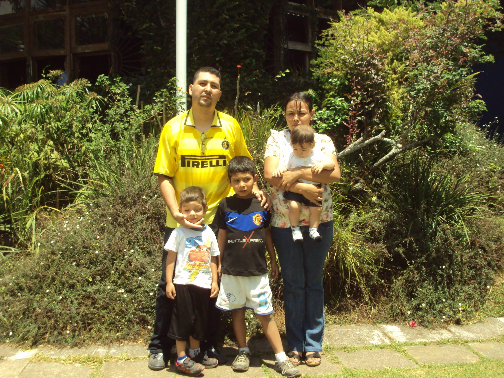

Descripción breve
Nací, en 2004 un 1 de mayo, desde pequeño siempre he tenido presente 2 cosas, los videojuegos y el deporte. durante los 3 años a las 9 años, me pasaron diversas cosas, como por ejemplo me fracture el pie 3 veces en menos de un año, era algo inquieto. Pero realmente es algo de familia, A eso es cierto, mi familia, Mi padre se llama igual que yo, así que creatividad pues potente verdad, pero bueno, el se llama Víctor Manuel Reyna Ramos, Mi mamá se llama Silvia Lorena Montecino Robles, tengo 2 hermanos, el primero se llama Manuel Antonio Reyna Montecino y el otro Gabriel Steven Reyna Montecino, yo soy el mayor ellos.
Durante un tiempo vive en la colonia bosques delrio, conocí a muchas personas, y tambien vivía cerca de algunos familiares, como mi abuela de parte de Madre, mi tio y mi tía, literalmente vivían a un pasaje entonces usulamente me iba aquedar donde mi abuela porque me gustaba estar allí porque tenía una cancha cerca de allí, en ese lugar conocí a personas como mi mejor amiga de la infancia que aun que y no hemos hablado, fue una persona importante se llama Christian Alexander si no recuerdo mal. al final nos mudamos a la colonia Conacastes y realmente no conozco a casi nadie en esta colonia, y literalmente llevo viviendo 10 años en ella, pero bueno.